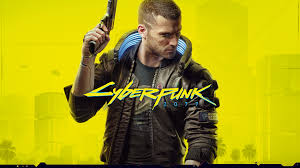

Cyberpunk 2077" ist ein Open-World-Action-Rollenspiel, das von CD Projekt Red entwickelt und im Dezember 2020 veröffentlicht wurde. Es spielt in Night City, einer dystopischen Metropole im Jahr 2077, die von Macht, Gewalt und technologischer Überwachung geprägt ist. Der Spieler schlüpft in die Rolle eines Söldners namens V, der sich durch die gefährliche Unterwelt von Night City navigiert, um sein Schicksal zu formen und sein eigenes Vermächtnis zu schmieden.
Die Programmierung von "Cyberpunk 2077" war ein enorm komplexer Prozess, der mehrere Jahre in Anspruch nahm und ein großes Team von Entwicklern erforderte. Hier sind einige Schlüsselaspekte der Programmierung dieses Spiels:
Engine: Cyberpunk 2077 wurde mit der REDengine entwickelt, einer proprietären Game Engine von CD Projekt Red. Diese Engine wurde speziell für die Anforderungen des Spiels optimiert und bietet eine leistungsstarke Grundlage für die Erstellung von Open-World-Spielen mit hochwertiger Grafik und komplexen Spielmechaniken.
Rendering und Grafik: Die Programmierung umfasste die Implementierung fortschrittlicher Rendering-Techniken, um die immersive Welt von Night City zum Leben zu erwecken. Dazu gehören unter anderem Raytracing, dynamische Beleuchtung, Partikeleffekte und detaillierte Texturen.
Künstliche Intelligenz: Die Entwicklung der KI war entscheidend, um die lebendige und glaubwürdige Bevölkerung von Night City zu erschaffen. Dies umfasste die Programmierung von Verhaltensroutinen für NPCs (Non-Playable Characters), Feinde und Fahrzeuge, um realistische Interaktionen und Reaktionen auf die Handlungen des Spielers zu ermöglichen.
Gameplay-Mechaniken: Die Programmierung umfasste die Implementierung einer Vielzahl von Gameplay-Mechaniken, darunter Kampf, Stealth, Fahrzeugsteuerung, Charakterentwicklung und Dialogsysteme. Diese Mechaniken wurden entwickelt, um dem Spieler eine breite Palette von Entscheidungen und Möglichkeiten zu bieten, um seine Reise durch Night City zu gestalten.
Bugfixing und Optimierung: Die Programmierer waren auch damit beschäftigt, Fehler zu beheben und das Spiel zu optimieren, um eine reibungslose und stabile Spielerfahrung auf verschiedenen Plattformen zu gewährleisten. Dies umfasste die Identifizierung und Behebung von Programmfehlern, Performance-Optimierungen und die Anpassung des Spiels für unterschiedliche Hardwarekonfigurationen.
Insgesamt war die Programmierung von "Cyberpunk 2077" ein gewaltiges Unterfangen, das die Zusammenarbeit eines talentierten Teams von Entwicklern erforderte, um eine immersive und technisch beeindruckende Spielerfahrung zu schaffen. Obwohl das Spiel bei seiner Veröffentlichung mit einigen technischen Problemen und Kritik konfrontiert war, bleibt es ein faszinierendes Beispiel für die Komplexität und Herausforderungen der Entwicklung von AAA-Videospielen in der heutigen Zeit.
Website Steam